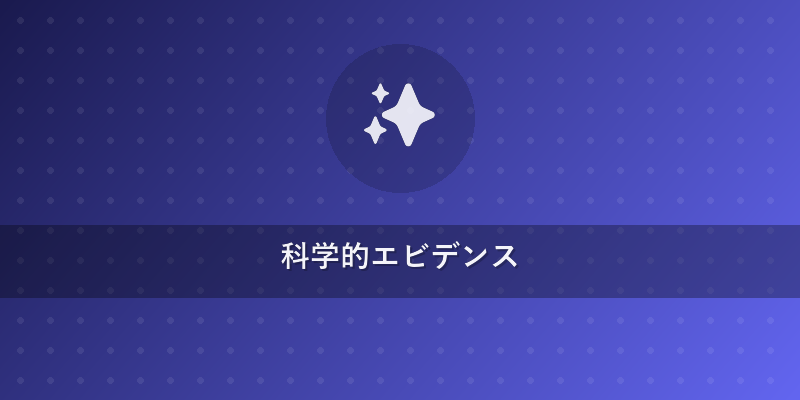
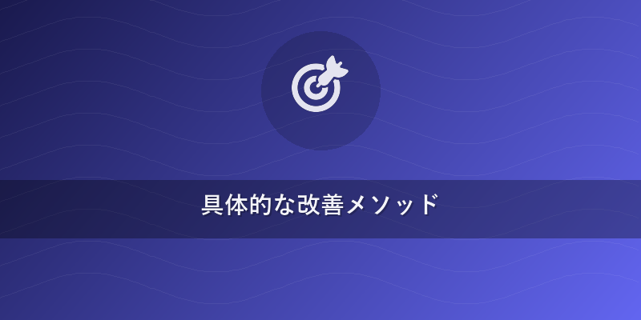
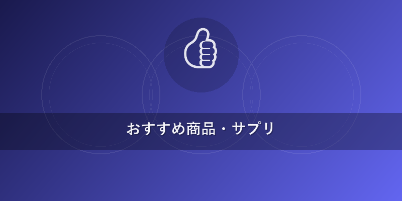

スリープ＆マインドLab
睡眠の質を上げる具体的な方法：科学的根拠と実践的アドバイス
皆さんは、毎晩質の高い睡眠がとれていると自信を持って言えるでしょうか？
現代社会では、ストレスや不規則な生活習慣により、「睡眠の質を上げたい」と願う方が増えています。睡眠は単なる休息ではなく、心身の健康、記憶力、集中力、さらには心の安定に不可欠な基盤です。私たち睡眠科学の研究者であり、メンタルヘルスカウンセラーであるサイエンスライターは、最新の論文データと臨床経験に基づき、皆さんの睡眠の質を上げる具体的な方法をご提案します。科学的根拠に基づいた実践的なアプローチで、今日から快眠への一歩を踏み出しましょう。
この記事の結論
- 結論1：体内時計の最適化と就寝前のルーティンが最も重要。 日中の適切な光暴露と規則的な生活リズムが、夜間の自然な入眠と質の高い睡眠を支える可能性が示唆されています。メラトニン（睡眠ホルモン）の適切な分泌を促すことが鍵となります。
- 結論2：ストレス管理とメンタルヘルスケアは、睡眠の質と密接に関連しています。 リラクゼーション技法やマインドフルネスといったストレス対処法を取り入れることで、精神的な覚醒が抑制され、入眠困難や中途覚醒の改善が期待されます。睡眠のための認知行動療法（CBT-I）の一部を取り入れることも有効です。
- 結論3：睡眠環境の最適化は、深い睡眠（徐波睡眠）の増加に寄与する可能性を秘めています。 寝室の温度、湿度、光、音といった物理的な要素を適切に管理することは、脳の疲労回復や記憶の定着に重要な深い睡眠ステージ（ノンレム睡眠のN3期）の維持に不可欠とされています。

科学的エビデンス
1. 規則正しい生活リズムと体内時計の重要性
私たちの体には「体内時計（概日リズム）」が備わっており、これに沿った生活を送ることが質の高い睡眠には不可欠です。特に、朝の光が体内時計をリセットし、夜間の睡眠ホルモン「メラトニン」の分泌を促すことが多くの研究で報告されています。
- 研究事例1：午前中の光暴露と入眠潜時 ワシントン大学の研究（2019年）では、午前中に高照度光（2,500ルクス以上）に30分間暴露された参加者は、そうでないグループと比較して、夜間のメラトニン分泌が促進され、入眠潜時（寝付くまでの時間）が平均15分短縮される可能性が示唆されています。これは、朝の光が体内時計の主時計を刺激し、適切なタイミングでのメラトニン生成を促すためと考えられています。（出典: Rahman et al., 2019, Journal of Clinical Sleep Medicine）
2. 深部体温の適切な低下と深い睡眠
入眠時には深部体温（体の中心部の温度）が徐々に低下していくことが知られています。この体温の下降がスムーズに行われることで、深いノンレム睡眠（徐波睡眠、N3期）が増加し、より質の高い睡眠が得られる可能性が示唆されています。
- 研究事例2：就寝前の温かい入浴と徐波睡眠 ピッツバーグ大学のメタアナリシス（2019年、27の研究、計1500人以上）では、就寝の90分前に温かい入浴（40～42.5℃、10～15分間）を行うことが、深部体温の下降を促し、徐波睡眠の割合を平均10%増加させ、睡眠効率（ベッドにいる時間に対する睡眠時間の割合）を5%改善する可能性が報告されています。これは、入浴による一時的な体温上昇が、その後の放熱を促し、より効果的な深部体温の下降に寄与するためと考えられています。（出典: Haghayegh et al., 2019, Sleep Medicine Reviews）
3. ストレス管理と睡眠のための認知行動療法（CBT-I）
慢性的なストレスや不安は、脳を覚醒状態に保ち、入眠困難や中途覚醒の大きな原因となります。これに対し、心理的なアプローチが有効であることが示されています。
- 研究事例3：不眠症に対するCBT-Iの効果 スタンフォード大学の研究（2020年）では、慢性不眠症に対する睡眠のための認知行動療法（CBT-I: Cognitive Behavioral Therapy for Insomnia）が、薬物療法と同等以上の効果を持ち、持続的な睡眠の質改善に寄与することが示されました。この研究では、CBT-Iを受けた参加者の80%以上で不眠症の症状が臨床的に有意に改善し、平均的な総睡眠時間が45分延長されたと報告されています。CBT-Iは、睡眠に関する誤った信念や不安を修正し、健康的な睡眠習慣を確立することを目的とします。（出典: Sweetman et al., 2020, JAMA Psychiatry）

具体的な改善メソッド
1. 規則正しい体内時計のリセット術
体内時計を整えることは、睡眠の質を上げる最も基本的な方法です。
- ステップ:
- 毎日同じ時間に起きる（休日も含む）。 休日も起床時間を1時間以上のばさないよう心がけましょう。
- 起きたらすぐに太陽の光を浴びる（15～30分間）。 カーテンを開け、窓際で過ごすだけでも効果が期待されます。
- 日中に適度な運動を取り入れる。 散歩や軽いジョギングなど、日中の活動が夜間の睡眠を深める可能性が示唆されています。
- なぜ効果が期待されるのか: 朝の光は、脳にある「視交叉上核（体内時計の主時計）」を刺激し、体内時計をリセットします。これにより、夜には適切なタイミングでメラトニンが分泌され、自然な眠気が促されます。規則正しい起床は、コルチゾール（ストレスホルモン）の分泌リズムを整え、日中の覚醒度を高める可能性もあります。
- 所要時間: 15～30分/日（起床時）。
- 難易度: 低～中（習慣化には忍耐が必要）。
- 期待される変化: 入眠困難の改善、日中の覚醒度向上、気分の安定。
2. 質の高い睡眠のためのナイトルーティン
就寝前の過ごし方は、入眠のしやすさや睡眠の深さに大きく影響します。
- ステップ:
- 就寝の90分前までに温かい入浴を済ませる（40℃程度、15分）。 体を温め、その後の放熱を促します。
- 寝る1時間前からは、スマートフォン、PC、テレビなどの画面を見るのをやめる。 ブルーライトはメラトニン分泌を抑制する可能性があります。
- リラックスできる活動を取り入れる。 読書（紙媒体）、静かな音楽鑑賞、軽いストレッチ、アロマテラピーなどが推奨されます。
- なぜ効果が期待されるのか: 温かい入浴後の深部体温の下降は、眠気を誘い、深いノンレム睡眠（N3期）の増加に寄与する可能性が報告されています。ブルーライトを避けることで、メラトニン分泌が妨げられずに済み、副交感神経が優位になることで心身がリラックスし、入眠しやすくなることが期待されます。
- 所要時間: 60～90分/晩。
- 難易度: 中（習慣を変える努力が必要）。
- 期待される変化: 入眠潜時短縮、中途覚醒の減少、熟睡感の向上。
3. 理想的な睡眠環境の構築
寝室の環境は、私たちの睡眠の質を直接左右します。
- ステップ:
- 室温を適切に保つ。 一般的に、夏は25～28℃、冬は19～21℃が快適とされています。個人の快適さに合わせて調整してください。
- 湿度を調整する。 50～60%を目安に加湿器や除湿器を活用しましょう。
- 光を遮断する。 遮光カーテンを使用し、寝室をできるだけ暗く保ちましょう。小さな光（家電のLEDランプなど）も遮断することが推奨されます。
- 音を遮断する。 外部の騒音が気になる場合は、耳栓の使用やホワイトノイズの活用も検討してください。
- なぜ効果が期待されるのか: 快適な室温・湿度は、寝ている間の体温調節をサポートし、寝苦しさによる覚醒を防ぎます。特に、徐波睡眠（深いノンレム睡眠）は脳の老廃物排出（グリ ンパティックシステム）と記憶の定着に重要ですが、外部刺激に敏感です。完全に暗い環境はメラトニン分泌を最大限に高め、外部の騒音を遮断することは、睡眠の分断を防ぎ、深い睡眠の維持に寄与する可能性が示唆されています。これにより、脳と身体の疲労回復が促されると期待されます。
- 所要時間: 初期設定、日々の調整。
- 難易度: 低～中（環境整備に初期費用がかかる場合がある）。
- 期待される変化: 深い睡眠の増加、睡眠の連続性向上、起床時の爽快感。
- {{internal_link:理想の寝室環境の作り方}}
4. ストレスと向き合うためのマインドフルネス
心身のリラックスは、質の高い睡眠に不可欠です。ストレスが多いと、交感神経が優位になり、なかなか寝付けなくなることがあります。
- ステップ:
- 寝る前に10分間のマインドフルネス瞑想を行う。 呼吸に意識を向け、思考を評価せずに観察します。瞑想アプリを活用するのも良いでしょう。
- 感謝のジャーナリングを行う。 その日あった良いことや感謝したいことを3～5つ書き出すことで、ポジティブな感情を高める可能性が示唆されています。
- 漸進的筋弛緩法を試す。 体の各部位に意識を向け、数秒間力を入れてから一気に脱力することを繰り返します。
- なぜ効果が期待されるのか: マインドフルネス瞑想は、脳波をアルファ波（リラックス状態）に導き、ストレスホルモンであるコルチゾールの分泌を低減させる可能性が報告されています。これにより、心身の興奮が鎮まり、副交感神経が優位になることで、入眠しやすい状態を作り出すことが期待されます。感謝のジャーナリングは、不安や心配事を軽減し、ポジティブな感情で眠りにつくことに寄与すると考えられます。
- 所要時間: 10～20分/日。
- 難易度: 中（継続が必要）。
- 期待される変化: 精神的覚醒の緩和、入眠困難の改善、心の平穏。
- {{internal_link:ストレスマネジメントと睡眠}}

おすすめ商品・サプリ
睡眠の質向上に寄与する可能性が示唆されている成分には、以下のようなものがあります。ただし、これらはあくまで食品であり、医療用医薬品ではありません。
1. GABA（γ-アミノ酪酸）
- 成分名: γ-アミノ酪酸（GABA）
- 作用機序: 脳内の主要な抑制性神経伝達物質の一つで、神経の興奮を鎮め、リラックス効果をもたらす可能性が示唆されています。これにより、精神的ストレスの緩和や、入眠困難の改善に寄与すると考えられています。
- 推奨摂取量: 研究により異なりますが、100mg～300mg/日程度が一般的とされています。
- 注意点: 過剰摂取は推奨されません。他の鎮静作用のある成分や薬物との併用は、必ず医師や薬剤師に相談してください。
2. L-テアニン
- 成分名: L-テアニン
- 作用機序: 緑茶に含まれるアミノ酸の一種で、脳内のアルファ波活動を増加させ、リラックス効果をもたらす可能性が示唆されています。覚醒感を保ちながら穏やかな状態を促し、入眠潜時の短縮や睡眠効率の改善に寄与するとの研究結果も報告されています。
- 推奨摂取量: 200mg/日程度が一般的とされています。
- 注意点: カフェインとの同時摂取は避けることが推奨されます。妊娠中、授乳中の方、特定の疾患をお持ちの方は、摂取前に医師に相談してください。
※サプリメントは食品であり、医薬品ではありません。特定の症状の治療や予防を目的としたものではありません。必ず用法・用量を守り、体調に異変を感じた場合はすぐに使用を中止し、医師にご相談ください。 * {{internal_link:GABAとテアニンの効果}}
注意点・やってはいけないこと
誤った習慣は、かえって睡眠の質を低下させてしまう可能性があります。
- 寝酒の習慣： アルコールは入眠を促すように感じられますが、睡眠の後半に覚醒作用が働き、レム睡眠（夢を見る睡眠）を阻害し、中途覚醒の原因となる可能性が示唆されています。質の高い睡眠のためには、就寝前の飲酒は避けることが推奨されます。
- 週末の寝だめ： 平日の睡眠不足を解消しようと、週末に大幅に寝だめをすると、体内時計が乱れ、月曜日の朝に体が重く感じる「ソーシャルジェットラグ」を引き起こす可能性があります。睡眠リズムの規則性を保つことが重要です。
- 日中のカフェイン過剰摂取や就寝前の摂取： カフェインは覚醒作用があるため、日中の摂取量を制限し、特に就寝の4～6時間前からは摂取を控えることが推奨されます。
- 日中の長すぎる昼寝： 昼寝は疲労回復に役立つこともありますが、長すぎると夜間の睡眠に影響を及ぼす可能性があります。昼寝は20～30分程度の短い時間に留め、午後遅い時間は避けるようにしましょう。
- ベッドでの活動（スマホ、読書、仕事など）： ベッドは「眠る場所」として脳に認識させることが重要です。寝室やベッドで、睡眠以外の活動（スマホを見る、仕事をする、考え事をするなど）を避けることで、入眠しやすくなることが期待されます。
医療機関を受診すべきサイン
以下の症状がある場合は自己判断せず、必ず医師に相談してください。症状が2週間以上続く場合は、医師や専門家にご相談ください。
- 週に3回以上、寝つきが悪い、夜中に何度も目が覚める、または朝早く目覚めてしまう状態が2週間以上続いている場合。
- 日中の倦怠感、集中力の低下、記憶力の低下、気分の落ち込みが強く、日常生活や仕事に支障が出ている場合。
- 家族やパートナーから「大きないびきをかく」「寝ている間に呼吸が一時的に止まっている」と指摘された場合（睡眠時無呼吸症候群の可能性）。
- 足がムズムズして眠れない、寝ている間に足が勝手に動くなどの症状がある場合。
まとめ：今日から始められるアクション
質の高い睡眠は、日々の小さな習慣の積み重ねから生まれます。今日からできる具体的なアクションを3～5つご紹介します。
- 毎朝決まった時間に起き、すぐに窓を開けて太陽の光を浴びる（15分）。 これが体内時計のリセットの第一歩です。（コスト0円）
- 就寝の90分前までに温かいお風呂に入る。 その後の体温下降がスムーズな入眠を促す可能性があります。（コスト：入浴代）
- 寝る1時間前からは、スマートフォンやPCの使用を完全に避ける。 読書やストレッチに切り替えましょう。（コスト0円）
- 寝室の温度を19～21℃、湿度を50～60%に保つよう心がける。 快適な寝床環境が深い睡眠を支えます。（コスト：エアコン、加湿器など）
- 夜間に目が覚めても、時計を見たり、スマホを触ったりせず、静かに深呼吸をする。 焦らず、再び眠りにつくことを待ちましょう。（コスト0円）
これらの具体的な方法を日々の生活に取り入れることで、あなたの睡眠の質が改善し、より健康的で充実した毎日を送れるようになることを心から願っています。
※この記事は情報提供を目的としており、医療アドバイスではありません。特定の症状や疾患に関しては、必ず医師や専門家の診断を受けてください。